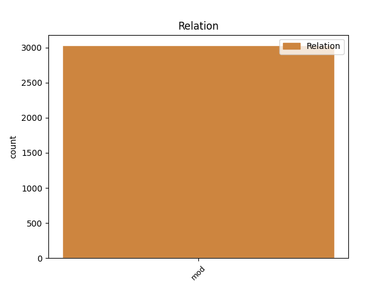
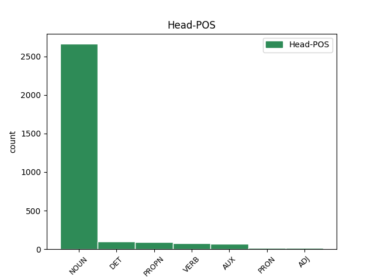
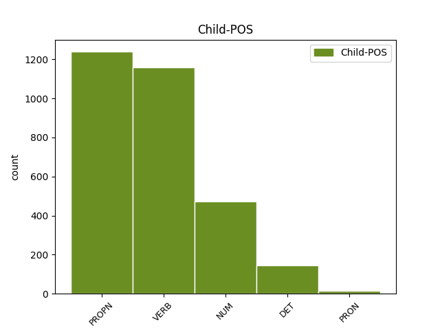

Distribution of features within this leaf



Agreement Rules sorted by frequency.
- When the dependent token is the modifer(mod) of the head token, and the dependent token is PROPN.
1 Inače _ _ _ _ 0 _ _ _
2 , _ _ _ _ 0 _ _ _
3 od _ _ _ _ 0 _ _ _
4 početka _ _ _ _ 0 _ _ _
5 re-emitiranja _ _ _ _ 0 _ _ _
6 serije _ _ _ _ 0 _ _ _
7 2002. _ _ _ _ 0 _ _ _
8 Top _ _ _ _ 0 _ _ _
9 Gear _ _ _ _ 0 _ _ _
10 je _ _ _ _ 0 _ _ _
11 imao _ _ _ _ 0 _ _ _
12 18 _ _ _ _ 0 _ _ _
13 sezona _ _ _ _ 0 _ _ _
14 i _ _ _ _ 0 _ _ _
15 147 _ _ _ _ 0 _ _ _
16 epizoda _ _ _ _ 0 _ _ _
17 , _ _ _ _ 0 _ _ _
18 a _ _ _ _ 0 _ _ _
19 njihova _ _ _ _ 0 _ _ _
20 Facebook Facebook PROPN Npmsn Case=Nom|Gender=Masc|Number=Sing 21 mod _ _
21 stranica stranica NOUN Ncfsn Case=Nom|Gender=Fem|Number=Sing 0 _ _ _
22 trenutno _ _ _ _ 0 _ _ _
23 ima _ _ _ _ 0 _ _ _
24 12,1 _ _ _ _ 0 _ _ _
25 milijun _ _ _ _ 0 _ _ _
26 likeova _ _ _ _ 0 _ _ _
27 . _ _ _ _ 0 _ _ _
1 Kako _ _ _ _ 0 _ _ _
2 u _ _ _ _ 0 _ _ _
3 svom _ _ _ _ 0 _ _ _
4 priopćenju _ _ _ _ 0 _ _ _
5 napominju _ _ _ _ 0 _ _ _
6 iz _ _ _ _ 0 _ _ _
7 Spona _ _ _ _ 0 _ _ _
8 komunikacija _ _ _ _ 0 _ _ _
9 , _ _ _ _ 0 _ _ _
10 u _ _ _ _ 0 _ _ _
11 tekstu _ _ _ _ 0 _ _ _
12 se _ _ _ _ 0 _ _ _
13 navodi _ _ _ _ 0 _ _ _
14 da _ _ _ _ 0 _ _ _
15 su _ _ _ _ 0 _ _ _
16 Irska _ _ _ _ 0 _ _ _
17 i _ _ _ _ 0 _ _ _
18 Poljska _ _ _ _ 0 _ _ _
19 jedne _ _ _ _ 0 _ _ _
20 od _ _ _ _ 0 _ _ _
21 rijetkih _ _ _ _ 0 _ _ _
22 zemalja _ _ _ _ 0 _ _ _
23 u _ _ _ _ 0 _ _ _
24 kojima _ _ _ _ 0 _ _ _
25 je _ _ _ _ 0 _ _ _
26 ova _ _ _ _ 0 _ _ _
27 pilula _ _ _ _ 0 _ _ _
28 posve _ _ _ _ 0 _ _ _
29 zabranjena _ _ _ _ 0 _ _ _
30 , _ _ _ _ 0 _ _ _
31 što _ _ _ _ 0 _ _ _
32 je _ _ _ _ 0 _ _ _
33 netočno _ _ _ _ 0 _ _ _
34 , _ _ _ _ 0 _ _ _
35 jer _ _ _ _ 0 _ _ _
36 je _ _ _ _ 0 _ _ _
37 pilula _ _ _ _ 0 _ _ _
38 indicirana _ _ _ _ 0 _ _ _
39 na _ _ _ _ 0 _ _ _
40 hitnu _ _ _ _ 0 _ _ _
41 kontracepciju _ _ _ _ 0 _ _ _
42 , _ _ _ _ 0 _ _ _
43 koja _ _ _ _ 0 _ _ _
44 sadrži _ _ _ _ 0 _ _ _
45 levonorgestrel _ _ _ _ 0 _ _ _
46 , _ _ _ _ 0 _ _ _
47 dostupna _ _ _ _ 0 _ _ _
48 u _ _ _ _ 0 _ _ _
49 obje _ _ _ _ 0 _ _ _
50 države država NOUN Ncfsg Case=Gen|Gender=Fem|Number=Sing 0 _ _ _
51 , _ _ _ _ 0 _ _ _
52 gdje _ _ _ _ 0 _ _ _
53 se _ _ _ _ 0 _ _ _
54 prodaje prodavati VERB Vmr3s Mood=Ind|Number=Sing|Person=3|Tense=Pres|VerbForm=Fin 50 mod _ _
55 u _ _ _ _ 0 _ _ _
56 ljekarnama _ _ _ _ 0 _ _ _
57 na _ _ _ _ 0 _ _ _
58 liječnički _ _ _ _ 0 _ _ _
59 recept _ _ _ _ 0 _ _ _
60 , _ _ _ _ 0 _ _ _
61 kao _ _ _ _ 0 _ _ _
62 što _ _ _ _ 0 _ _ _
63 je _ _ _ _ 0 _ _ _
64 to _ _ _ _ 0 _ _ _
65 od _ _ _ _ 0 _ _ _
66 danas _ _ _ _ 0 _ _ _
67 moguće _ _ _ _ 0 _ _ _
68 i _ _ _ _ 0 _ _ _
69 u _ _ _ _ 0 _ _ _
70 Hrvatskoj _ _ _ _ 0 _ _ _
71 . _ _ _ _ 0 _ _ _
1 Uvjeren _ _ _ _ 0 _ _ _
2 sam _ _ _ _ 0 _ _ _
3 da _ _ _ _ 0 _ _ _
4 će _ _ _ _ 0 _ _ _
5 ova _ _ _ _ 0 _ _ _
6 umirovljenička _ _ _ _ 0 _ _ _
7 konfiguracija _ _ _ _ 0 _ _ _
8 koja _ _ _ _ 0 _ _ _
9 se _ _ _ _ 0 _ _ _
10 stvara _ _ _ _ 0 _ _ _
11 na _ _ _ _ 0 _ _ _
12 državnoj _ _ _ _ 0 _ _ _
13 razini _ _ _ _ 0 _ _ _
14 i _ _ _ _ 0 _ _ _
15 u _ _ _ _ 0 _ _ _
16 kojoj _ _ _ _ 0 _ _ _
17 su _ _ _ _ 0 _ _ _
18 uključene _ _ _ _ 0 _ _ _
19 dvije dva NUM Mlcf-n Case=Nom|Gender=Fem|Number=Plur|NumType=Card 22 mod _ _
20 najveće _ _ _ _ 0 _ _ _
21 umirovljeničke _ _ _ _ 0 _ _ _
22 udruge udruga NOUN Ncfpn Case=Nom|Gender=Fem|Number=Plur 0 _ _ _
23 , _ _ _ _ 0 _ _ _
24 sve _ _ _ _ 0 _ _ _
25 ovo _ _ _ _ 0 _ _ _
26 što _ _ _ _ 0 _ _ _
27 govorim _ _ _ _ 0 _ _ _
28 potvrditi _ _ _ _ 0 _ _ _
29 već _ _ _ _ 0 _ _ _
30 na _ _ _ _ 0 _ _ _
31 slijedećim _ _ _ _ 0 _ _ _
32 parlamentarnim _ _ _ _ 0 _ _ _
33 izborima _ _ _ _ 0 _ _ _
34 , _ _ _ _ 0 _ _ _
35 od _ _ _ _ 0 _ _ _
36 kada _ _ _ _ 0 _ _ _
37 će _ _ _ _ 0 _ _ _
38 umirovljenici _ _ _ _ 0 _ _ _
39 napokon _ _ _ _ 0 _ _ _
40 biti _ _ _ _ 0 _ _ _
41 u _ _ _ _ 0 _ _ _
42 mogućnosti _ _ _ _ 0 _ _ _
43 izboriti _ _ _ _ 0 _ _ _
44 se _ _ _ _ 0 _ _ _
45 za _ _ _ _ 0 _ _ _
46 svoja _ _ _ _ 0 _ _ _
47 prava _ _ _ _ 0 _ _ _
48 . _ _ _ _ 0 _ _ _
1 Premda _ _ _ _ 0 _ _ _
2 je _ _ _ _ 0 _ _ _
3 , _ _ _ _ 0 _ _ _
4 kao _ _ _ _ 0 _ _ _
5 i _ _ _ _ 0 _ _ _
6 svako _ _ _ _ 0 _ _ _
7 dijete _ _ _ _ 0 _ _ _
8 , _ _ _ _ 0 _ _ _
9 voljela _ _ _ _ 0 _ _ _
10 igru _ _ _ _ 0 _ _ _
11 i _ _ _ _ 0 _ _ _
12 priče _ _ _ _ 0 _ _ _
13 , _ _ _ _ 0 _ _ _
14 ovakvi _ _ _ _ 0 _ _ _
15 su _ _ _ _ 0 _ _ _
16 se _ _ _ _ 0 _ _ _
17 trenutci _ _ _ _ 0 _ _ _
18 upisali _ _ _ _ 0 _ _ _
19 duboko _ _ _ _ 0 _ _ _
20 u _ _ _ _ 0 _ _ _
21 dušu _ _ _ _ 0 _ _ _
22 njezinoga njezin DET Ps3nsg Case=Gen|Gender=Neut|Gender[psor]=Fem|Number=Sing|Number[psor]=Sing|Person=3|Poss=Yes|PronType=Prs 23 mod _ _
23 bića biće NOUN Ncnsg Case=Gen|Gender=Neut|Number=Sing 0 _ _ _
24 . _ _ _ _ 0 _ _ _
1 Od _ _ _ _ 0 _ _ _
2 navedenih _ _ _ _ 0 _ _ _
3 domena _ _ _ _ 0 _ _ _
4 , _ _ _ _ 0 _ _ _
5 u _ _ _ _ 0 _ _ _
6 Hrvatskoj _ _ _ _ 0 _ _ _
7 su _ _ _ _ 0 _ _ _
8 najčešće _ _ _ _ 0 _ _ _
9 smještene _ _ _ _ 0 _ _ _
10 one onaj DET Pd-fpn Case=Nom|Gender=Fem|Number=Plur|PronType=Dem 0 _ _ _
11 sa _ _ _ _ 0 _ _ _
12 nastavkom _ _ _ _ 0 _ _ _
13 " _ _ _ _ 0 _ _ _
14 .iz.hr _ _ _ _ 0 _ _ _
15 " _ _ _ _ 0 _ _ _
16 njih oni PRON Pp3-pg Case=Gen|Number=Plur|Person=3|PronType=Prs 10 mod _ _
17 70 _ _ _ _ 0 _ _ _
18 posto _ _ _ _ 0 _ _ _
19 , _ _ _ _ 0 _ _ _
20 odmah _ _ _ _ 0 _ _ _
21 iza _ _ _ _ 0 _ _ _
22 njih _ _ _ _ 0 _ _ _
23 su _ _ _ _ 0 _ _ _
24 " _ _ _ _ 0 _ _ _
25 .hr _ _ _ _ 0 _ _ _
26 " _ _ _ _ 0 _ _ _
27 sa _ _ _ _ 0 _ _ _
28 47 _ _ _ _ 0 _ _ _
29 posto _ _ _ _ 0 _ _ _
30 , _ _ _ _ 0 _ _ _
31 dok _ _ _ _ 0 _ _ _
32 su _ _ _ _ 0 _ _ _
33 " _ _ _ _ 0 _ _ _
34 .com.hr _ _ _ _ 0 _ _ _
35 " _ _ _ _ 0 _ _ _
36 najrjeđe _ _ _ _ 0 _ _ _
37 smještene _ _ _ _ 0 _ _ _
38 na _ _ _ _ 0 _ _ _
39 poslužiteljima _ _ _ _ 0 _ _ _
40 koji _ _ _ _ 0 _ _ _
41 se _ _ _ _ 0 _ _ _
42 nalaze _ _ _ _ 0 _ _ _
43 u _ _ _ _ 0 _ _ _
44 Hrvatskoj _ _ _ _ 0 _ _ _
45 . _ _ _ _ 0 _ _ _
Disagree Examples:
1 " _ _ _ _ 0 _ _ _
2 Ovo _ _ _ _ 0 _ _ _
3 je _ _ _ _ 0 _ _ _
4 beskompromisna _ _ _ _ 0 _ _ _
5 borba _ _ _ _ 0 _ _ _
6 protiv _ _ _ _ 0 _ _ _
7 kriminala kriminal NOUN Ncmsg Case=Gen|Gender=Masc|Number=Sing 0 _ _ _
8 i _ _ _ _ 0 _ _ _
9 korupcije _ _ _ _ 0 _ _ _
10 koji _ _ _ _ 0 _ _ _
11 postoje postojati VERB Vmr3p Mood=Ind|Number=Plur|Person=3|Tense=Pres|VerbForm=Fin 7 mod _ _
12 u _ _ _ _ 0 _ _ _
13 svim _ _ _ _ 0 _ _ _
14 zemljama _ _ _ _ 0 _ _ _
15 , _ _ _ _ 0 _ _ _
16 ali _ _ _ _ 0 _ _ _
17 čije _ _ _ _ 0 _ _ _
18 sankcioniranje _ _ _ _ 0 _ _ _
19 ovisi _ _ _ _ 0 _ _ _
20 uglavnom _ _ _ _ 0 _ _ _
21 o _ _ _ _ 0 _ _ _
22 političkoj _ _ _ _ 0 _ _ _
23 volji _ _ _ _ 0 _ _ _
24 relevantnih _ _ _ _ 0 _ _ _
25 čimbenika _ _ _ _ 0 _ _ _
26 i _ _ _ _ 0 _ _ _
27 sposobnosti _ _ _ _ 0 _ _ _
28 institucija _ _ _ _ 0 _ _ _
29 da _ _ _ _ 0 _ _ _
30 neovisno _ _ _ _ 0 _ _ _
31 rade _ _ _ _ 0 _ _ _
32 svoj _ _ _ _ 0 _ _ _
33 posao _ _ _ _ 0 _ _ _
34 " _ _ _ _ 0 _ _ _
35 , _ _ _ _ 0 _ _ _
36 rekao _ _ _ _ 0 _ _ _
37 je _ _ _ _ 0 _ _ _
38 zastupnik _ _ _ _ 0 _ _ _
39 vladajuće _ _ _ _ 0 _ _ _
40 VMRO _ _ _ _ 0 _ _ _
41 Antonio _ _ _ _ 0 _ _ _
42 Milošoski _ _ _ _ 0 _ _ _
43 za _ _ _ _ 0 _ _ _
44 SETimes _ _ _ _ 0 _ _ _
45 . _ _ _ _ 0 _ _ _
1 Komšić _ _ _ _ 0 _ _ _
2 , _ _ _ _ 0 _ _ _
3 hrvatski _ _ _ _ 0 _ _ _
4 član _ _ _ _ 0 _ _ _
5 tročlanog _ _ _ _ 0 _ _ _
6 predsjedništva _ _ _ _ 0 _ _ _
7 , _ _ _ _ 0 _ _ _
8 jedan jedan NUM Mlcmsn Case=Nom|Gender=Masc|Number=Sing|NumType=Card 12 mod _ _
9 je _ _ _ _ 0 _ _ _
10 od _ _ _ _ 0 _ _ _
11 najpopularnijih _ _ _ _ 0 _ _ _
12 političara političar NOUN Ncmpg Case=Gen|Gender=Masc|Number=Plur 0 _ _ _
13 u _ _ _ _ 0 _ _ _
14 Federaciji _ _ _ _ 0 _ _ _
15 Bosne _ _ _ _ 0 _ _ _
16 i _ _ _ _ 0 _ _ _
17 Hercegovine _ _ _ _ 0 _ _ _
18 . _ _ _ _ 0 _ _ _
1 " _ _ _ _ 0 _ _ _
2 Jedna jedan NUM Mlcfsn Case=Nom|Gender=Fem|Number=Sing|NumType=Card 6 mod _ _
3 od _ _ _ _ 0 _ _ _
4 najvažnijih _ _ _ _ 0 _ _ _
5 državnih _ _ _ _ 0 _ _ _
6 institucija institucija NOUN Ncfpg Case=Gen|Gender=Fem|Number=Plur 0 _ _ _
7 je _ _ _ _ 0 _ _ _
8 paralizirana _ _ _ _ 0 _ _ _
9 . _ _ _ _ 0 _ _ _
1 Stručnjak _ _ _ _ 0 _ _ _
2 za _ _ _ _ 0 _ _ _
3 ustav _ _ _ _ 0 _ _ _
4 i _ _ _ _ 0 _ _ _
5 zastupnik _ _ _ _ 0 _ _ _
6 Victor _ _ _ _ 0 _ _ _
7 Popa _ _ _ _ 0 _ _ _
8 izjavio _ _ _ _ 0 _ _ _
9 je _ _ _ _ 0 _ _ _
10 kako _ _ _ _ 0 _ _ _
11 bi _ _ _ _ 0 _ _ _
12 prvi _ _ _ _ 0 _ _ _
13 ciljevi cilj NOUN Ncmpn Case=Nom|Gender=Masc|Number=Plur 0 _ _ _
14 Timoftija Timofti PROPN Npmsg Case=Gen|Gender=Masc|Number=Sing 13 mod _ _
15 trebali _ _ _ _ 0 _ _ _
16 biti _ _ _ _ 0 _ _ _
17 ustavna _ _ _ _ 0 _ _ _
18 reforma _ _ _ _ 0 _ _ _
19 i _ _ _ _ 0 _ _ _
20 poboljšanja _ _ _ _ 0 _ _ _
21 . _ _ _ _ 0 _ _ _
1 Jedan jedan NUM Mlcmsn Case=Nom|Gender=Masc|Number=Sing|NumType=Card 4 mod _ _
2 od _ _ _ _ 0 _ _ _
3 tih _ _ _ _ 0 _ _ _
4 napora napor NOUN Ncmpg Case=Gen|Gender=Masc|Number=Plur 0 _ _ _
5 jest _ _ _ _ 0 _ _ _
6 , _ _ _ _ 0 _ _ _
7 rekao _ _ _ _ 0 _ _ _
8 je _ _ _ _ 0 _ _ _
9 ministar _ _ _ _ 0 _ _ _
10 pravosuđa _ _ _ _ 0 _ _ _
11 Oleg _ _ _ _ 0 _ _ _
12 Efrim _ _ _ _ 0 _ _ _
13 , _ _ _ _ 0 _ _ _
14 reforma _ _ _ _ 0 _ _ _
15 pravosuđa _ _ _ _ 0 _ _ _
16 . _ _ _ _ 0 _ _ _